Die ESG-Daten sind da. Nur leider in 14.000 Rechnungen verteilt.
Mit CSRD und steigendem Reporting-Druck wird das, was bisher „nebenher in Excel" lief, zum echten Geschäftsrisiko. Erkennen Sie sich wieder?
Wochen statt Tage
Finance- und Sustainability-Teams verlieren ganze Quartalsphasen damit, Rechnungen, Reisekosten und Entsorgungsbelege per Hand zu sortieren.
Datenchaos statt Datenbasis
Verbrauchsdaten stecken verstreut in PDFs, Excel-Listen, ERP-Buchungen und Lieferanten-Mails. Kein einheitliches Format, viele Sonderfälle.
Unsicher vor der Prüfung
Wenn der Wirtschaftsprüfer fragt „Woher kommt diese Zahl?" – fehlt häufig der saubere Audit-Trail vom Beleg bis zum Berichtswert.
Personal-Engpass
Es gibt kein zehnköpfiges ESG-Team. Die gleichen zwei Personen sollen Buchhaltung machen UND CSRD-konforme Daten liefern.
ESG-Tool ohne Daten
Die Reporting-Software ist gekauft – aber der eigentliche Engpass liegt davor: in der Datenerfassung. Das Tool wartet auf Input.
Druck von außen wächst
Banken, Kunden und Gesellschafter fordern saubere ESG-Kennzahlen – mit klarer Methodik und nachvollziehbarer Datenherkunft.
Wie sollen wir diese ESG-Daten sauber, prüfbar und ohne riesigen manuellen Aufwand zusammenbekommen?
Vom Beleg zur prüfungssicheren CO₂-Zahl. Vollautomatisch.
Der ESG-Autopilot liest Ihre unstrukturierten Belege, klassifiziert sie nach den passenden Emissionsfaktoren und liefert auditierbare Daten in Ihr ESG-Tool – ergänzend, nicht ersetzend.
Belege rein
PDF-Rechnungen, Buchungen aus DATEV/SAP, Reisekosten, Entsorgungsnachweise. Wir holen die Daten dort ab, wo sie heute liegen.
KI liest & versteht
Reasoning-LLMs erkennen Mengen, Einheiten, Lieferanten – auch bei Sonderfällen wie gemischten Materialpositionen oder Reise-Belegen.
Faktoren zuordnen
Automatisches Mapping auf Scope 1/2/3 und Emissionsfaktoren. Bei Unsicherheit: Human-in-the-Loop, klar gekennzeichnet.
Audit-Trail raus
Saubere Zeitreihen ins bestehende ESG-Tool, Excel oder direkt zur Wirtschaftsprüfung. Mit Nachweis vom Beleg bis zum Datenpunkt.
Weniger manuelle Arbeit. Bessere Daten. Ruhig schlafen vor der Prüfung.
In 2 Wochen wissen Sie, ob es funktioniert.
Kein Beratungs-Marathon, keine Workshop-Slides. Ein kompakter, kaufbarer Check auf Ihren echten Belegen – mit klarer Entscheidungsvorlage am Ende.
Scoping-Termin
Wir verstehen Ihren konkreten Reporting-Druck, sprechen mit Finance / Sustainability / IT und legen einen repräsentativen Belegsatz fest.
Belege & Sonderfälle
Sie liefern einen kleinen, aber repräsentativen Datensatz: Reisekosten, Materialeinkauf, Entsorgung, Energie. Inkl. der Fälle, die heute Probleme machen.
Erste Extraktions-Probe
Wir lassen den ESG-Autopilot auf Ihre echten Belege los und zeigen Ihnen, was sauber automatisiert geht – und wo Hürden liegen.
Readiness-Bericht
Wir verstehen Ihren konkreten Reporting-Druck, sprechen mit Finance / Sustainability / IT und legen einen repräsentativen Belegsatz fest.



Wir optimieren gemeinsam mit skillbyte unsere Prozesse durch den gezielten Einsatz von KI. Unsere individuellen Herausforderungen werden passgenau adressiert.
Was Finance- und Sustainability-Leads uns oft fragen.
30 Minuten Gespräch.
Klarheit, ob es bei Ihnen funktioniert.
Sie schildern Ihren konkreten Reporting-Druck und wo die Daten heute liegen. Wir sagen Ihnen ehrlich, ob ein Data Readiness Check für Sie sinnvoll ist – oder eben nicht.